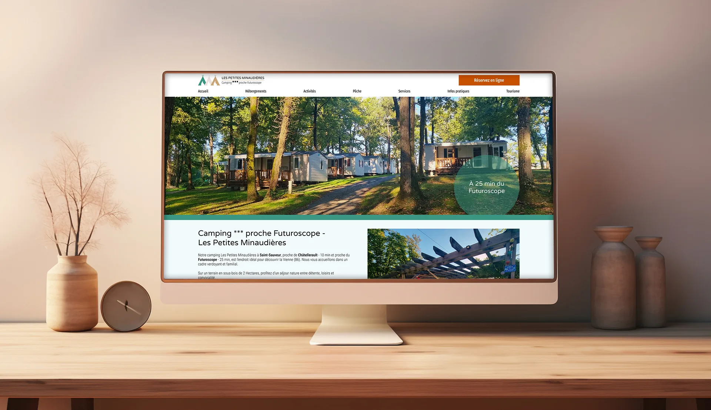

Création d’identité visuelle & site de réservation
Janv-Mars 2026
Product Designer & Développeuse WordPressCamping Minaudières
Le projet
Accompagner la reprise d’un camping en repensant son image et sa présence en ligne, jusqu’à la mise en place d’un site permettant de réserver directement un séjour.
Mon intervention
- Conception et réalisation de l’ensemble du projet, de l’analyse des besoins à la mise en ligne
- Création de l’identité visuelle et conception de l’expérience utilisateur
- Réalisation du site avec réservation automatisée et contenus optimisés pour le référencement
Compétences mobilisées
